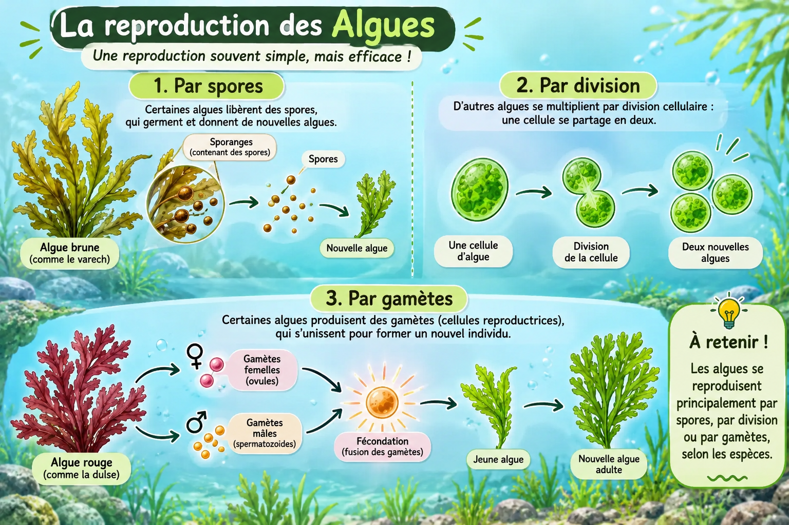
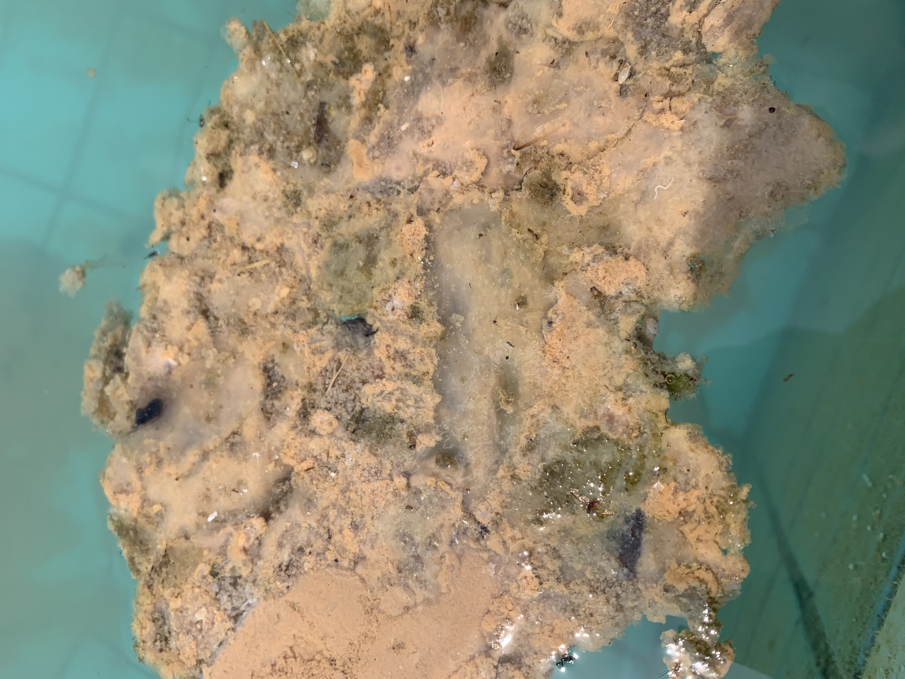

Problème résolu-évolution:
Vivre et faire la photosynthèse dans l'eau;
Vivre et faire la photosynthèse dans l'eau;
Elles n'ont pas besoin de lutter contre le dessèchement, car elles sont toujours dans l'eau. Elles n'ont ni vraie racine, ni vraie tige, ni vraie feuille. Elles absorbent l'eau et les sels minéraux par tout leur corps.

Algues
Thalle, vie aquatique >
1 milliard d'années

